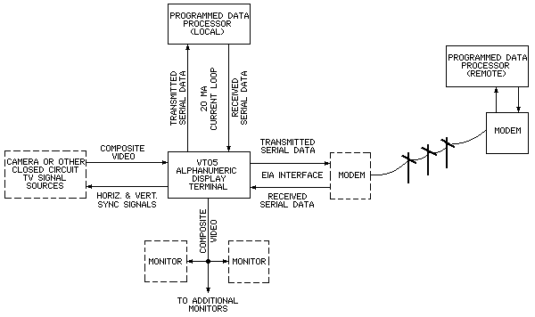
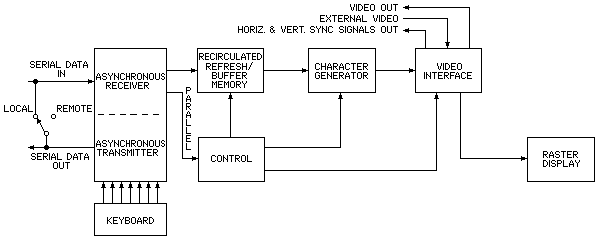
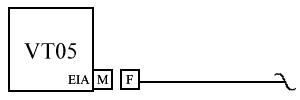
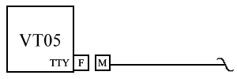

| Foreword | Contents | Chapter 2 |
The VT05 Alphanumeric Display Terminal, consisting of a CRT terminal and self-contained keyboard, can be used as a peripheral I/O device with a computer or as a stand-alone closed-circuit television monitor (see Figure 1-1). In computer applications, the VT05 (with system software) can be used to compose, edit, and forward messages to the computer; retrieve and update alphanumeric data contained in the computer files; receive instructions and data from the processor; and perform on-line debugging. When performing these functions, the VT05 operates similarly to a teletypewriter, except that it is a soft copy device. The advantages of using the VT05 are: it is faster, quieter, more compact, easier to maintain, and considerably more reliable than an electromechanical teletypewriter.
|  |
The full capacity of the VT05 buffer and display is 20 lines, each containing 72 characters, for a total of 1440 characters (full screen).
The VT05 is a raster-type display that is compatible with Electronics Industries Association (EIA) standards (refer to Paragraph 1.2.2); thus, it allows characters and video pictures originating from a closed-circuit television source to be displayed with LOCAL- or computer-generated alphanumeric text (REMOTE) superimposed on the picture. With closed-circuit television compatibility, the VT05 can display graphic information originating from a scan conversion-type device and can interface with other closed-circuit television-compatible devices such as electronic cameras and scanned microscopes. A further advantage of the raster scan display technique employed in the VT05 is that several standard television monitors can be connected to it, via 75Ω video cables, to provide a multiple remote monitoring capability.
NOTE
At present, external video equipment is not supplied by DEC; therefore, before connecting external video equipment to the VT05, the customer should contact DEC Computer Special Systems (CSS) for further information pertaining to VT05 closed-circuit television applications. DEC will not be responsible for degraded performance in the VT05 Alphanumeric Display Terminal caused by external video equipment supplied by the customer unless the CSS Group has, by prior written agreement, approved the use of such equipment not manufactured or supplied by DEC in combination with the VT05.
The VT05 keyboard transmits character codes asynchronously in accordance with U.S. ASCII X3.15-1966 Bit Sequencing Standard. The keyboard can transmit either full ASCII or a 97-character subset. The selected code is determined by an internal selector switch. With the switch set to position 1, the keyboard transmits the full ASCII character set listed in Table 1-1. With the internal switch set to position 2, the keyboard transmits the 97-character ASCII subset listed in Table 1-2.
The VT05 CRT display does not display lower case alphabetical characters. However, it can receive both upper and lower case characters, which are interpreted and displayed as upper case characters, as listed in Table 1-3. The VT05 uses 13 control characters or functions that are also not displayed. The 13 control characters are listed in Table 1-4.
| Control Character | Function | |
|---|---|---|
| CTRL "G" (Bel) | Produces an audible tone. | |
| † | CAD | Direct Cursor Addressing. |
| TAB | Horizontal Tab. | |
| CR | Carriage Return. | |
| ALT | Alternate Mode. | |
| † | LF | Line Feed (if in line 20, causes "scroll"). |
| † | HOME | Move cursor to top line, first character position. |
| ERASE LINE (EOL) | Erase all data from the current cursor position (including data in the cursor position) to the end of the line. | |
| † | ERASE PAGE (EOS) | Erase all data on the CRT screen from the current cursor position (including data in the cursor position) to line 20, character position 72. |
| † | C (![[up]](arrowup.png) ) ) |
Cursor up (one line). |
| † | C (![[down]](arrowdown.png) ) ) |
Cursor down (one line). |
C (![[right]](arrowright.png) ) ) |
Cursor right (one space). | |
C (![[left]](arrowleft.png) ) (Backspace) ) (Backspace) |
Cursor left (one space). | |
†See filler character requirements (Paragraph 2.7).
The VT05 is compatible with Electronic Industries Association (EIA) Standards RS-232-C and RS-330. Because most communications interfaces are designed to these standards, the VT05 can easily be installed to directly replace present devices. A single 25-pin Amphenol connector on the rear of the VT05 is used for all EIA input/output signals. In addition, the VT05 can transmit and receive data through its 20-mA current loop interface.
Serial data inputs and outputs are generated and received through the VT05 parallel/serial data, asynchronous transmitter/receiver (see Figure 1-1). Serial data outputs are derived from the keyboard and are output to the data processor via the asynchronous, serial data transmitter at a selectable baud rate. Serial data inputs to the VT05 are input from the processor into an asynchronous receiver where the serial data is converted to parallel and is then applied to the high-speed buffer. Data to be displayed is input to the VT05 memory; control data is input to the VT05 control logic (see Figure 1-2).
|  |
Optional variations available in the VT05 Alphanumeric Display Terminal are listed below. When ordering a VT05, option information should be included.
VT05 X - X X
| | |
| | | A: 115V; 60 Hz
| | |-- B: 230V; 60 Hz
| | C: 115V; 50 Hz
| | D: 230V; 50 Hz
| |
| | A: no parity; half ASCII-Keyboard
| |---- B: no parity; full ASCII-Keyboard
| C: with parity; half ASCII-Keyboard
| D: with parity; full ASCII-Keyboard
|
|-------- A: Transmission rates up to 300 baud
B: Transmission rates up to 2400 baud
Additional VT05 option information is provided in Paragraph 1.4 of the VT05 Alphanumeric Display Console Maintenance Manual.
All VT05 input/output connectors are located on the VT05 rear panel as shown in Figure 1-3. VT05 interfacing information pertaining to the various DEC computers, communications control options, etc., is provided in Figures 1-4 and 1-5, and Tables 1-5 and 1-6. For more detailed VT05 interfacing information, refer to Chapter 2 of the VT05 Alphanumeric Display Terminal Maintenance Manual.
|  |
| M = | 25 contact, male plug. Manufacturer's Part No.: Amphenol 17-20250-1, and Cinch DB25P or DB-19604-434. DEC Part No. 12-05886. |
| F = | 25 contact, female receptacle. Manufacturer's Part No.: Amphenol 17-10250-1, and Cinch DB25B or DB-19604-443. DEC Part No. 12-04975. |
| The manufacturer's part no. and DEC Part No. for the hood that is used on both plug and receptacle cable mounted connectors are Cinch DB-51226-1 and DEC 12-5885, respectively. |
|  |
| M = | 8 contact, male plug. Manufacturer's Part No.: Mate-N-Lock 1-480460-0, DEC Part No. 12-09340-00. |
| F = | 8 contact, female receptacle, DEC Part No. 12-09340-01. |
| Pin Number | Description |
|---|---|
| 2 | Transmitted Data |
| 3 | Received Data |
| 7 | Signal Ground (Common Return) |
| 20 | Data Terminal Ready |
| Pin Number | Description |
|---|---|
| 1 | Unassigned |
| 2 | Received Data* |
| 3 | Transmitted Data* |
| 4 | Reserved |
| 5 | Received Data |
| 6 | Reserved |
| 7 | Transmitted Data |
| 8 | Reserved |
*Pins 2 and 3 are more negative referenced to pins 5 and 7.